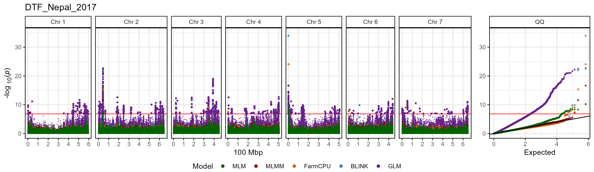
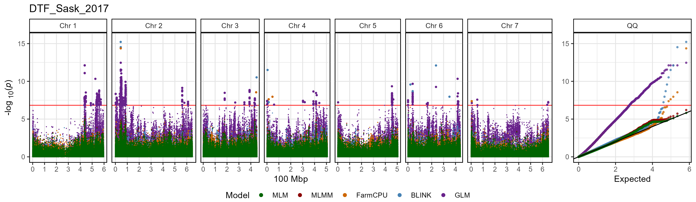
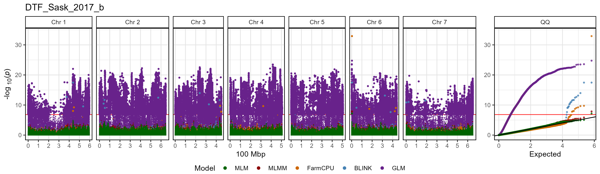
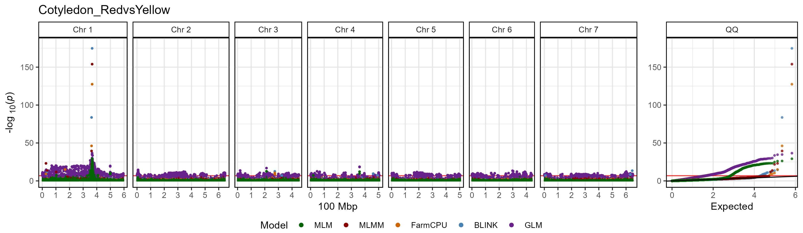
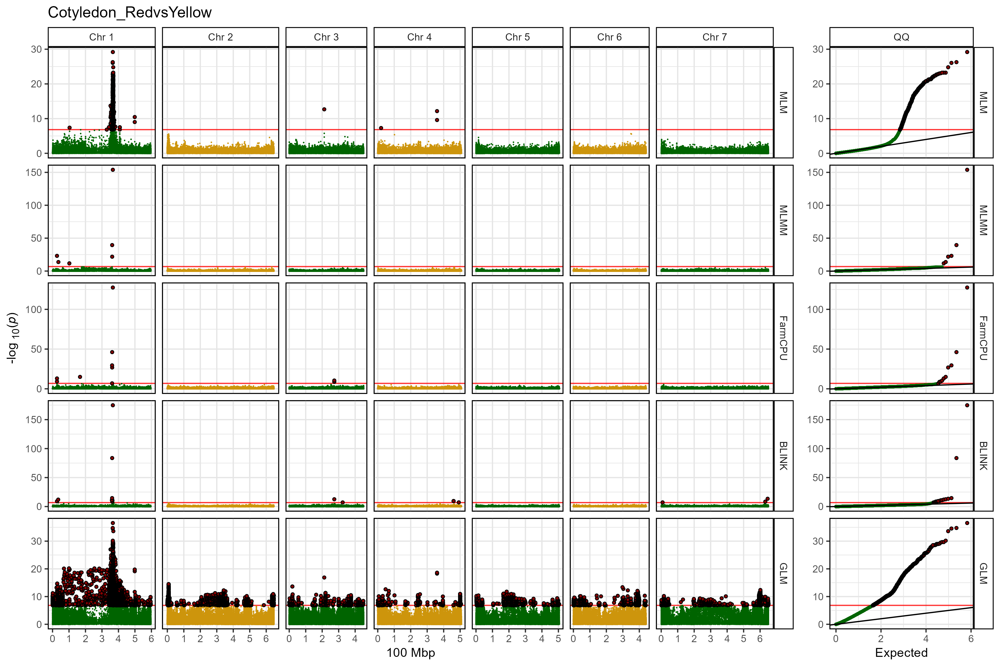
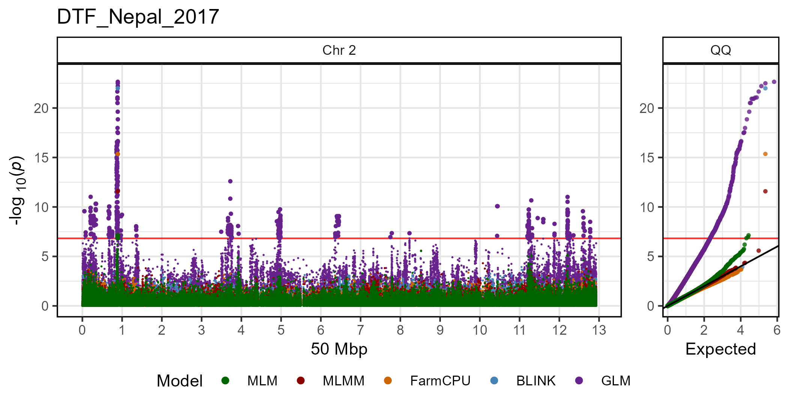
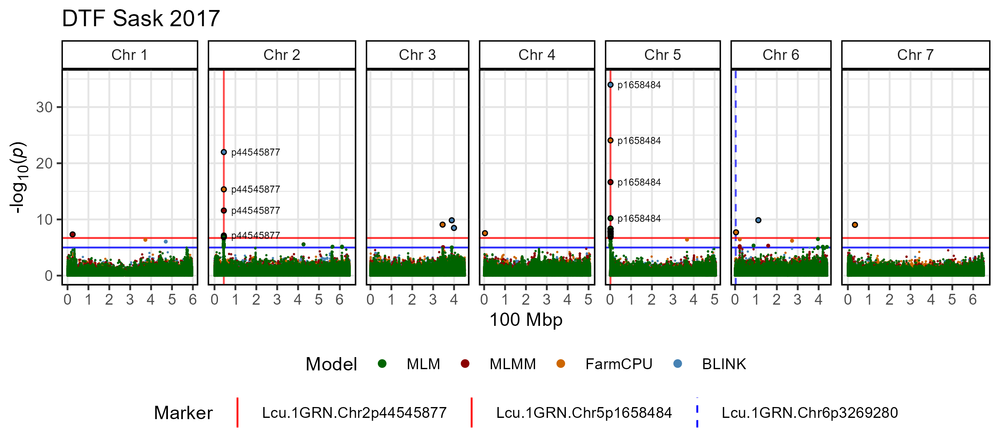
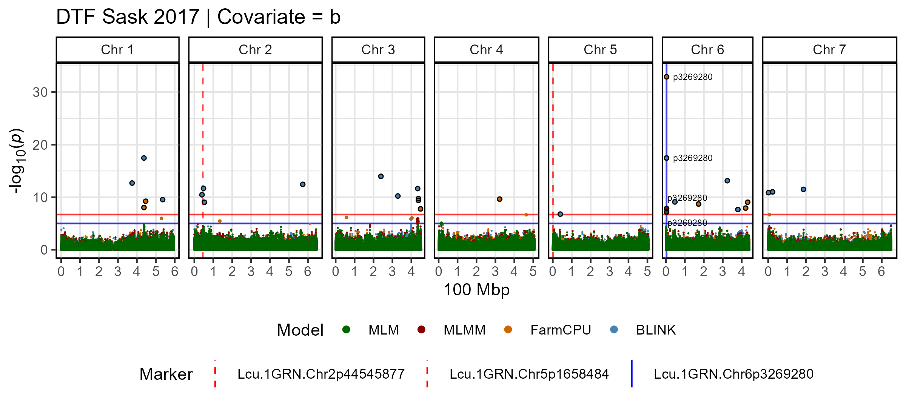

gg_manhattan()
2.1_gg_Manhattan.RmdThe function gg_Manhattan() creates manhattan plots from
GAPIT GWAS results.
Specifying a folder and trait is all that
is needed to create manhattan plots.
# Plot
mp <- gg_Manhattan(
# Specify a folder with GWAS results
folder = "GWAS_Results/",
# Select a trait to plot
trait = "DTF_Nepal_2017" )
# Save
ggsave("figures/gg_Manhattan_01_DTF_Nepal_2017.png",
mp, width = 12, height = 3.5, bg = "white")
Plot all traits with a loop
A simple loop can be used to plot GWAS results for each trait within
the specified folder.
# Create for loop
for(i in list_Traits(folder = "GWAS_Results/")) {
# Plot
mp <- gg_Manhattan(
# Specify a folder with GWAS results
folder = "GWAS_Results/",
# Select a trait to plot
trait = i )
# Save
ggsave(paste0("figures/gg_Manhattan_01_", i, ".png"),
mp, width = 12, height = 3.5, bg = "white")
}


Facetting
The default setting for gg_Manhattan() is to set
facet = F which will plot all models together. By changing
facet = T we can separate each GWAS model. When setting
facet = T, points are now colored by chromosome, which can
be changed with chr.colors. Significant associations can
also be highlighted by setting highlight.sig and
sig.color.
# Plot
mp <- gg_Manhattan(
# Specify a folder with GWAS results
folder = "GWAS_Results/",
# Select a trait to plot
trait = "Cotyledon_RedvsYellow",
# Facet out the different GWAS models
facet = T,
# Set chromosome colors
chr.colors = rep(c("darkgreen", "darkgoldenrod3"), 4),
# Highlight significant associations
highlight.sig = T,
# Choose the highlight color
sig.color = "darkred" )
# Save
ggsave("figures/gg_Manhattan_02_Cotyledon_RedvsYellow.png",
mp, width = 12, height = 8, bg = "white")
Single Chromosome
A single chromosome can be plotted by setting chr. The
x-axis can also be adjusted by setting chr.unit.
# Plot
mp <- gg_Manhattan(
# Specify a folder with GWAS results
folder = "GWAS_Results/",
# Select a trait to plot
trait = "DTF_Nepal_2017",
# Select a chromosome to plot
chr = 2,
# Change chromosome units
chr.unit = "50 Mbp" )
# Save
ggsave("figures/gg_Manhattan_03_DTF_Nepal_2017.png",
mp, width = 7, height = 3.5, bg = "white")
Customized Plot
The default for gg_Manhattan() is to set the plot
title = trait, but this can be changed. You can also adjust
the threshold and add asug.threshold. If
specified, markers can be highlighted and have their
labels customized. Adding vlines can be used
to aid in comparisons with other manhattan plots or accross GWAS
models. vlines can be customized with
vline.colors and vline.types. You can Select
which GWAS models to plot and set the colors of each with
model.colors. Significant associations can also be
highlighted by setting highlight.sig and
sig.color. The QQ plot can also be removed by setting
addQQ = F.
# Plot
mp <- gg_Manhattan(
# Specify a folder with GWAS results
folder = "GWAS_Results/",
# Select a trait to plot
trait = "DTF_Nepal_2017",
# Create a title for the plot
title = "DTF Sask 2017",
# Set horizontal thresholds bars
threshold = 6.7,
sug.threshold = 5,
# Highlight specific markers
markers = c("Lcu.1GRN.Chr2p44545877",
"Lcu.1GRN.Chr5p1658484"),
labels = c("p44545877",
"p1658484"),
# Add vertical lines
vlines = c("Lcu.1GRN.Chr2p44545877",
"Lcu.1GRN.Chr5p1658484",
"Lcu.1GRN.Chr6p3269280"),
vline.colors = c("red","red","blue"),
vline.types = c(1,1,2),
# Change the legend alignment
legend.box="vertical",
# Select GWAS models
models = c("MLM", "MLMM", "FarmCPU", "BLINK"),
# Set colors for each GWAS model
model.colors = c("darkgreen", "darkred", "darkorange3", "steelblue"),
# Highlight significant associations
highlight.sig = T,
# Highlight color
sig.color = "black",
# Remove the QQ plot
addQQ = F)
# Save
ggsave("figures/gg_Manhattan_04_DTF_Nepal_2017.png",
mp, width = 8, height = 3.5, bg = "white")
# Plot
mp <- gg_Manhattan(
# Specify a folder with GWAS results
folder = "GWAS_Results/",
# Select a trait to plot
trait = "DTF_Sask_2017_b",
# Create a title for the plot
title = "DTF Sask 2017 | Covariate = b",
# Set horizontal thresholds bars
threshold = 6.7,
sug.threshold = 5,
# Highlight specific markers
markers = "Lcu.1GRN.Chr6p3269280",
labels = "p3269280",
# Add vertical lines
vlines = c("Lcu.1GRN.Chr2p44545877",
"Lcu.1GRN.Chr5p1658484",
"Lcu.1GRN.Chr6p3269280"),
vline.colors = c("red","red","blue"),
vline.types = c(2,2,1),
# Change the legend alignment
legend.box="vertical",
# Select GWAS models
models = c("MLM", "MLMM", "FarmCPU", "BLINK"),
# Set colors for each GWAS model
model.colors = c("darkgreen", "darkred", "darkorange3", "steelblue"),
# Highlight significant associations
highlight.sig = T,
# Highlight color
sig.color = "black",
# Remove the QQ plot
addQQ = F)
# Save
ggsave("figures/gg_Manhattan_04_DTF_Sask_2017_b.png",
mp, width = 8, height = 3.5, bg = "white")